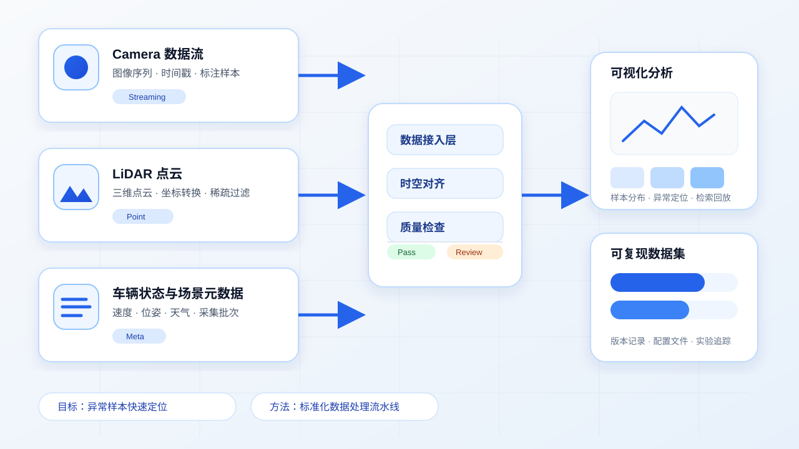
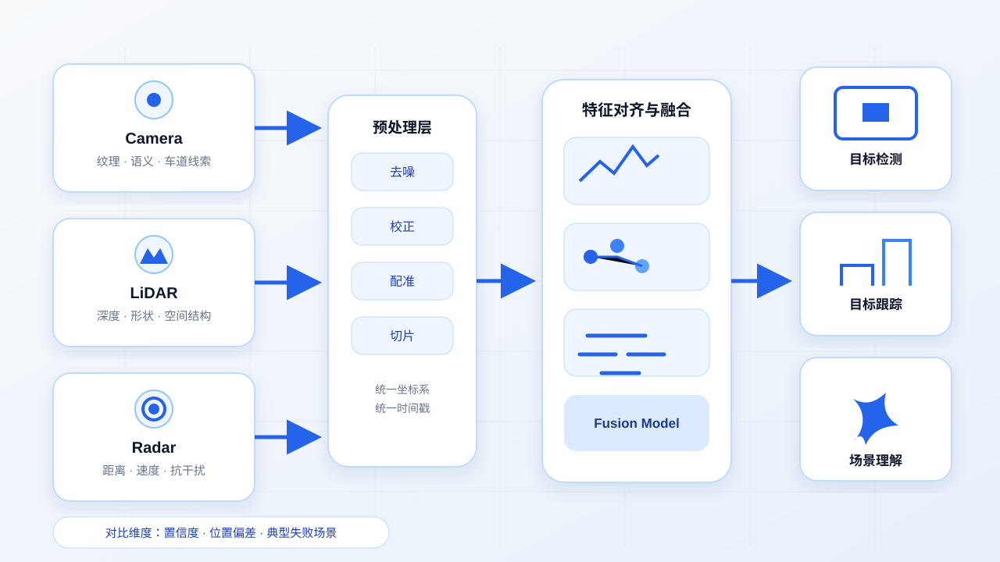
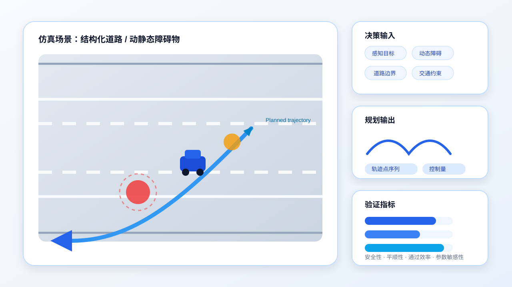

学习背景
北京交通大学机械工程专业研究生，围绕智能驾驶环境感知与决策规划开展课程学习、算法实践和仿真验证。
北京交通大学机械工程专业研究生，围绕智能驾驶环境感知与决策规划开展课程学习、算法实践和仿真验证。
深入理解环境感知、决策规划与仿真验证之间的关联，形成可复现的项目实践和清晰的学习记录。

围绕摄像头、激光雷达等传感器数据，建立数据整理、可视化与质量检查流程，帮助快速定位异常样本并形成可复现实验数据集。
（在新窗口打开）查看 GitHub 主页 →
以摄像头与点云数据为基础，比较单传感器与融合检测结果，分析目标置信度、位置偏差和典型失败场景，为后续规划提供更可靠输入。
（在新窗口打开）查看 GitHub 主页 →
搭建典型行驶场景，实现避障与路径生成逻辑，通过轨迹曲线、控制量和安全性指标验证决策规划效果，并记录不同参数下的实验对比。
（在新窗口打开）查看 GitHub 主页 →CSDN 博客
记录智能驾驶学习与实践的博客，欢迎查看文章与后续更新。
（在新窗口打开）阅读文章 →